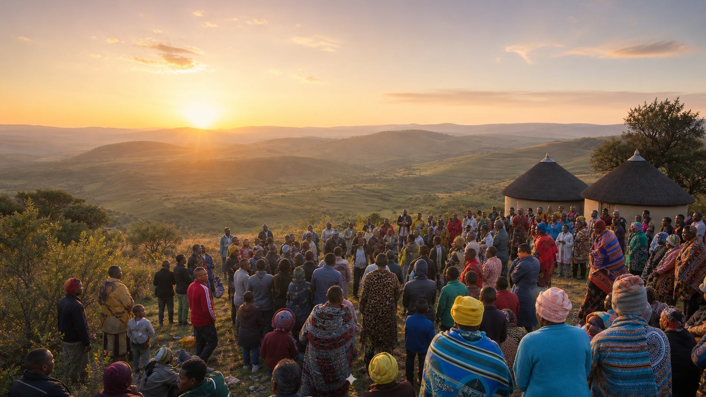
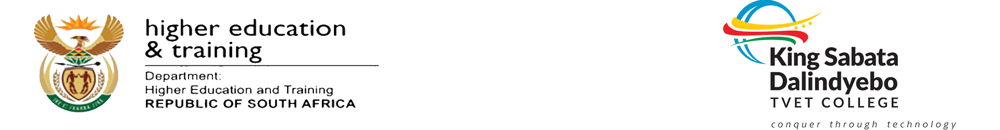
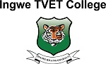
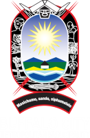
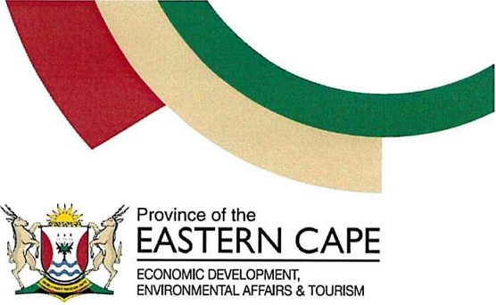

Phakama Eastern Cape · Official Civic Movement
Rescuing &Reviving
Rescuing &Reviving
the EC.
Phakama Eastern Cape is a people-powered civic movement working with communities to promote accountable leadership, strengthen local development and create sustainable opportunities for all.
To mobilise, educate and connect communities so that together we build a stronger, more prosperous Eastern Cape.
Communities rising together.
Phakama Eastern Cape is a people-powered civic movement bringing communities and partners together to strengthen accountability, unlock opportunities and build a more prosperous Eastern Cape.
Why Communities Trust Phakama Eastern Cape
Trust Built Through Service and Accountability.
Phakama Eastern Cape works alongside communities, listens to local priorities and builds practical solutions through partnership. Our credibility is measured by how we serve communities every day.
Community-Led
We listen first and ensure community priorities shape our work.
Partnership-Driven
We connect communities, institutions and leaders around sustainable solutions.
Ethical & Accountable
Transparency, integrity and responsible governance guide every decision.
Volunteer-Led
Citizens contribute their time, skills and experience for the common good.
Province-Wide
Our growing network strengthens communities across the Eastern Cape.
Our Partnerships



